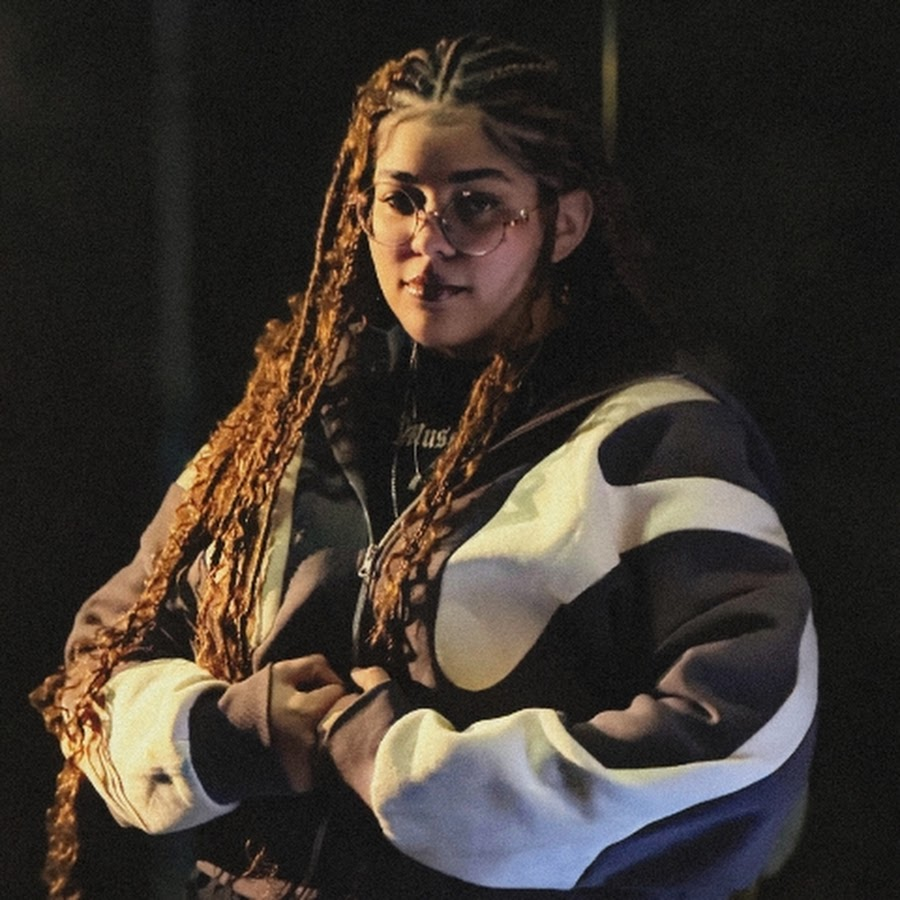

Embora possuam trajetórias e características próprias, os três possuem
trabalhos relacionados à música e à cultura geek, participando de
diferentes projetos e colaborações dentro desse cenário.

Anny Karolyne
é uma artista brasileira, natural do Piauí. Segundo sua biografia
oficial no Spotify, ela começou a compartilhar suas músicas em 2022, aos 17
anos, e já ultrapassou 50 faixas lançadas, além de possuir diversas colaborações.
A própria descrição destaca sua versatilidade na composição e interpretação e sua
busca por inovação e autenticidade.
Entre Outros
Ark.
é um artista que possui uma trajetória anterior ao seu envolvimento mais
recente com o cenário geek. Seus trabalhos registrados incluem lançamentos
anteriores como Ark Tape #1, de 2022, e Lobelia's Garden, de 2024,
mostrando que sua carreira musical não começou dentro do rap geek.
Nos trabalhos mais recentes, porém, sua presença no rap geek tornou-se muito
mais evidente. Entre seus lançamentos recentes estão músicas relacionadas a
personagens e universos de obras como Bleach, Naruto, Blue Lock, Death
Note e outros.
Entre Outros
TakaB
é outro artista com uma presença bastante forte em colaborações. Sua
discografia é extensa e composta principalmente por singles, com trabalhos
próprios e participações com diferentes artistas.
Assim como Anny e Ark King, TakaB possui diversos trabalhos relacionados
ao universo geek.
Discografia:
Entre Outros